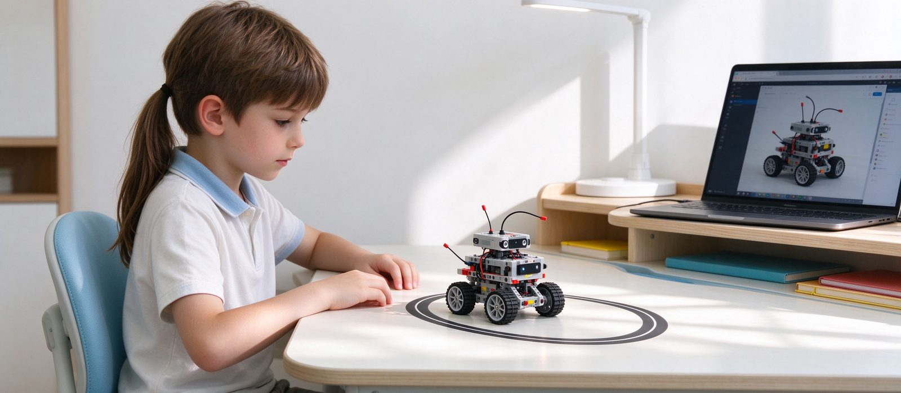

一周只上一次课，机器人编程够不够？
频率不是关键，任务闭环才是。一次 120 分钟能完整走完「设计—搭建—编程—调试」，比一周两次每次只搭一半更有效；课后也不需要买一套器材，用家里现成的东西做三次小练习就够了。

结论先行：机器人编程不怕一周一次，怕的是每次课都停在「搭完就走」。判断够不够的标准不是课时数量，而是这一节课里孩子有没有完整走完一遍「设计—搭建—编程—调试」的闭环。走完了，一周一次足够支撑长期进步；走不完，一周三次也只是重复劳动。
一、为什么 120 分钟比 60 分钟值钱
机器人课的四个环节有严格顺序，而且互相牵连：
- 设计：想清楚结构怎么承力、动作怎么实现，大约 15–25 分钟。
- 搭建：把想法变成能站的实体，30–50 分钟。
- 编程：让动作按预期发生，15–30 分钟。
- 调试：跑偏了要查是结构还是程序的问题，往往占掉三分之一时间。
60 分钟通常只够走到编程；调试被压到最后五分钟，孩子看到的是「差不多能跑」，不是「我把它修好了」。这就是为什么三年级以上我们排 120 分钟：不是加内容，是留出调试的位置。
二、一周一次，进步靠什么积累
靠三样东西叠加，而不是靠频次：
- 每节课的问题被记住：下节课开头用五分钟回顾「上次为什么卡住、这次怎么避开」，这一小段比多上一节课有用。
- 难度按台阶抬：同一个任务加一个传感器、加一个约束，比换一个新主题更能长能力。
- 作品能讲清楚：能说出「我改了哪里、为什么改」，说明这次学习真的闭合了。
三、课后要不要练：不买器材也能练
不需要专门买一套器材放在家里。三次小练习就够，每次十到十五分钟：
- 拆解练习：让孩子讲一遍上周作品的传动路径——动力从哪来、经过什么、最后怎么动。讲不清的地方就是没想透的地方。
- 纸上编程：给一个生活场景（比如「扫地机器人绕开椅子」），让他在纸上画出判断顺序：先看什么、满足什么条件才转弯。
- 找bug：家长故意说错一处（「齿轮装这里也能转吧」），让孩子指出错在哪。能纠正别人，才算真会。
如果孩子已经进入竞赛方向，另当别论——那时候需要固定的调试时间，校区会安排集训，器材也由学校提供。
四、什么情况下「一周一次」确实不够
有两种例外要说清：
- 备赛期：赛前四到六周通常需要加密训练，一周一次不够，这段时间要单独安排。
- 孩子卡在同一个点上超过一个月：不是频率问题，是某个基础概念没通（常见的是传感器阈值和循环条件），该做的是一次针对性补课，而不是加课。
也要承认另一种情况：如果孩子每次上课都很疲惫、作品完成度持续下降，加课只会加重消耗。这时候该减，不该加。
五、家长最容易踩的两个误区
一是把「课时多」当成「学得好」。一周三次、每次都在搭同一个模型的孩子，两年后往往还不如一周一次、每节都在解决问题的那一个。
二是用成品数量衡量进步。带回家的作品多少，和「能不能独立修好一个不工作的机器人」是两件不同的事，后者才是这项学习真正的产出。
六、到校能验证什么
试听时可以专门看调试环节：孩子搭完之后，老师是直接帮他改好，还是让他自己找出问题。我们这边三年级以下 60 分钟、三年级以上 120 分钟，2–4 人小班，一周一次，器材由校区提供，地点在河西区大沽南路 459 号下瓦房晶采大厦写字楼四楼 408 室。
我们校区的教具分工，顺便说清楚
一周只上一次课够不够。天津市河西区乐之疆教育培训学校自 2012 年建校起，就是丹麦乐高教育部授权的“乐高活动中心—天津晶采中心 LEGO EDUCATION CENTER（全国 NO.060）”，也是天津首家。日常课堂用的全部是丹麦原装乐高教具与丹麦原版乐高教育课程体系——大颗粒、小颗粒、齿轮机械、电机与传感器这一整套搭建类教具，是乐高几十年迭代下来的产物。
乐高教具的好处很具体：注塑模具精度高、ABS 材料稳定，孩子反复拼拆时卡扣松紧一致、手感顺，长期使用也不容易变形；同一批零件能搭出几十种结构，课上试错的成本很低。这也是低龄段结构启蒙与机械原理课必须用它讲的原因。国产的中鸣器材只有机器人（主控、结构件、传动、编程），没有乐高这类搭建体系，大颗粒小颗粒的结构课靠它做不了。
所以我们把两套器材分了工：平时上课用乐高，比赛用中鸣。原因是 2019 年起教育部白名单赛事对参赛器材有明确要求，乐高作为进口品牌不在允许使用的清单内，只有国产器材能上场；中鸣的人工智能竞赛机器人符合这个要求，学员参赛所用的中鸣器材全部由学校提供，家长不需要自购，全年多场白名单赛事还可以共用同一套硬件，只需按当届要求更换竞赛场地道具。
一句话概括我们的配置：丹麦原装乐高教具 + 丹麦原版乐高教育课程 + 中鸣人工智能竞赛机器人 + 教育部白名单赛事成绩（WRCT 2026 具身智能挑战赛小学组、初中组冠军与亚军；第 18 届全国青少年机器人竞赛全国季军；全国中小学信息技术与实践大赛 12 项国家一等奖）。回到「一周一次够不够」这个问题：课上器材由校区提供，家里不用重复投入，一周一次的效率才起得来。
预约体验课